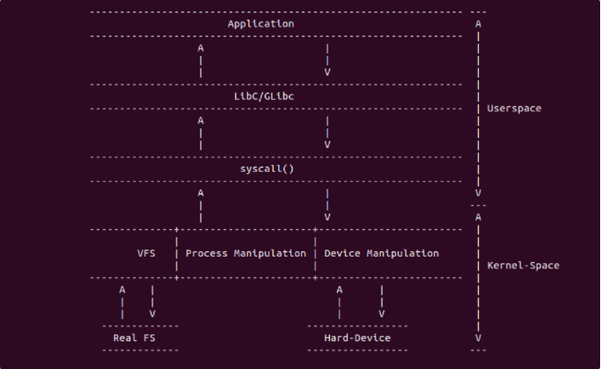

3.7.1. linux系统调用
3.7.1.1. 系统调用原理

系统调用是linux内核为用户态程序提供的主要功能接口，通过系统调用，用户态进程能够临时切换到内核态,使用内核态才能访问的硬件和资源完成特定功能。 系统调用由linux内核和内核模块实现,内核在处理系统时还会检查系统调用请求和参数是否正确,以保证对特权资源和硬件访问的正确性。通过这种方式,linux 在提供内核和硬件资源访问接口的同时，保证了内核和硬件资源的正确性和安全性
不同架构的系统调用实现细节存在差异,但总体上可以归结为以下三个内容:
在用户空间触发系统调，通用的库函数libc或glibc面向用户层，通过本身的逻辑处理找到对应的系统调用接口，并通过软中断的方式进入内核系统调用，不同架构下 系统调用软中断的方式不同,x86通过0x80软中断进入内核系统调用处理，arm通过swi指令
不同架构下系统调用中断处理不同,但功能是一致的，那就是通过传递下来的系统调用号，找到系统调用入口信息，并将系统调用传递的参数传递给内核里系统调用实现
内核部分系统调用的实现
系统调用可以分为六大类
进程控制(process control)
文件管理(file manipulation)
设备管理(device manipulation)
信息维护(information maintenance)
通信(conmunication)
保护(protection)
3.7.1.2. 系统调用用户空间的实现
用户空间触发系统调用的方法很多，包括直接调用汇编命令进行触发，也可以通过”syscall”函数进行触发等，这里重点介绍”syscall”函数.用户空间可以通过
调用 syscall() 函数来触发指定的系统调用，其函数定义如下
#include <sys/syscall.h>
int syscall(int number, ...);
syscall()执行一个系统调用，根据number参数和所有的汇编语言接口来调用哪个系统调用。示例如下
int main(void)
{
int nice = 0;
/*
* __NR_nice是sys_nice的系统调用号,nice是传递给系统调用的一个参数
* 该函数会直接调用内核的sys_nice()函数实现修改当前进程的nice值
*/
syscall(__NR_nice, nice);
}
syscall()函数可以间接的调用系统调用，移除了库函数对调用过程的影响。下面是syscall()在不同架构中的实现
3.7.1.3. arm架构
arm架构将系统调用入口信息放置在 arch/arm/tools/syscall.tbl
#
# Linux system call numbers and entry vectors
#
# The format is:
# <num> <abi> <name> [<entry point> [<oabi compat entry point>]]
#
# Where abi is:
# common - for system calls shared between oabi and eabi (may have compat)
# oabi - for oabi-only system calls (may have compat)
# eabi - for eabi-only system calls
#
# For each syscall number, "common" is mutually exclusive with oabi and eabi
#
0 common restart_syscall sys_restart_syscall
1 common exit sys_exit
2 common fork sys_fork
3 common read sys_read
4 common write sys_write
5 common open sys_open
6 common close sys_close
# 7 was sys_waitpid
8 common creat sys_creat
9 common link sys_link
10 common unlink sys_unlink
11 common execve sys_execve
12 common chdir sys_chdir
13 oabi time sys_time32
14 common mknod sys_mknod
15 common chmod sys_chmod
16 common lchown sys_lchown16
# 17 was sys_break
# 18 was sys_stat
19 common lseek sys_lseek
20 common getpid sys_getpid
21 common mount sys_mount
22 oabi umount sys_oldumount
23 common setuid sys_setuid16
24 common getuid sys_getuid16
25 oabi stime sys_stime32
26 common ptrace sys_ptrace
27 oabi alarm sys_alarm
# 28 was sys_fstat
29 common pause sys_pause
30 oabi utime sys_utime32
# 31 was sys_stty
# 32 was sys_gtty
33 common access sys_access
34 common nice sys_nice
# 35 was sys_ftime
36 common sync sys_sync
37 common kill sys_kill
38 common rename sys_rename
39 common mkdir sys_mkdir
40 common rmdir sys_rmdir
41 common dup sys_dup
42 common pipe sys_pipe
43 common times sys_times
# 44 was sys_prof
45 common brk sys_brk
46 common setgid sys_setgid16
47 common getgid sys_getgid16
# 48 was sys_signal
49 common geteuid sys_geteuid16
50 common getegid sys_getegid16
51 common acct sys_acct
52 common umount2 sys_umount
只需要在表中填入系统调用号，abi类型信息，系统调用名字,系统调用函数名字后就可以确定一个唯一的系统调用入口
3.7.1.4. arm64架构
arm64架构将系统调用入口信息放在 include/uapi/asm-generic/unistd.h
#define __NR_io_setup 0
__SC_COMP(__NR_io_setup, sys_io_setup, compat_sys_io_setup)
#define __NR_io_destroy 1
__SYSCALL(__NR_io_destroy, sys_io_destroy)
#define __NR_io_submit 2
__SC_COMP(__NR_io_submit, sys_io_submit, compat_sys_io_submit)
#define __NR_io_cancel 3
__SYSCALL(__NR_io_cancel, sys_io_cancel)
#if defined(__ARCH_WANT_TIME32_SYSCALLS) || __BITS_PER_LONG != 32
#define __NR_io_getevents 4
__SC_3264(__NR_io_getevents, sys_io_getevents_time32, sys_io_getevents)
#endif
/* fs/xattr.c */
#define __NR_setxattr 5
__SYSCALL(__NR_setxattr, sys_setxattr)
#define __NR_lsetxattr 6
__SYSCALL(__NR_lsetxattr, sys_lsetxattr)
#define __NR_fsetxattr 7
__SYSCALL(__NR_fsetxattr, sys_fsetxattr)
#define __NR_getxattr 8
__SYSCALL(__NR_getxattr, sys_getxattr)
#define __NR_lgetxattr 9
__SYSCALL(__NR_lgetxattr, sys_lgetxattr)
#define __NR_fgetxattr 10
__SYSCALL(__NR_fgetxattr, sys_fgetxattr)
#define __NR_listxattr 11
__SYSCALL(__NR_listxattr, sys_listxattr)
#define __NR_llistxattr 12
__SYSCALL(__NR_llistxattr, sys_llistxattr)
#define __NR_flistxattr 13
__SYSCALL(__NR_flistxattr, sys_flistxattr)
#define __NR_removexattr 14
__SYSCALL(__NR_removexattr, sys_removexattr)
#define __NR_lremovexattr 15
__SYSCALL(__NR_lremovexattr, sys_lremovexattr)
#define __NR_fremovexattr 16
__SYSCALL(__NR_fremovexattr, sys_fremovexattr)
只需要在该表中定义一个系统调用号，再通过调__SYSCALL()函数确定系统调用函数信息就可以确定一个唯一的系统调用入口
3.7.1.5. 系统调用内核实现
系统调用内核实现就是系统调用再内核的实现过程，在接收到来自用户空间的系统调用参数之后,内核核心实现就根据自己的逻辑进行处理,处理完毕之后，内核可以将结果返回给用户空间， 也可以拷贝相应的数据用户空间，内核部分的核心实现通过以下宏进行定(位于include/linux/syscalls.h)
#ifndef SYSCALL_DEFINE0
#define SYSCALL_DEFINE0(sname) \
SYSCALL_METADATA(_##sname, 0); \
asmlinkage long sys_##sname(void); \
ALLOW_ERROR_INJECTION(sys_##sname, ERRNO); \
asmlinkage long sys_##sname(void)
#endif /* SYSCALL_DEFINE0 */
#define SYSCALL_DEFINE1(name, ...) SYSCALL_DEFINEx(1, _##name, __VA_ARGS__)
#define SYSCALL_DEFINE2(name, ...) SYSCALL_DEFINEx(2, _##name, __VA_ARGS__)
#define SYSCALL_DEFINE3(name, ...) SYSCALL_DEFINEx(3, _##name, __VA_ARGS__)
#define SYSCALL_DEFINE4(name, ...) SYSCALL_DEFINEx(4, _##name, __VA_ARGS__)
#define SYSCALL_DEFINE5(name, ...) SYSCALL_DEFINEx(5, _##name, __VA_ARGS__)
#define SYSCALL_DEFINE6(name, ...) SYSCALL_DEFINEx(6, _##name, __VA_ARGS__)
#define SYSCALL_DEFINEx(x, sname, ...) \
SYSCALL_METADATA(sname, x, __VA_ARGS__) \
__SYSCALL_DEFINEx(x, sname, __VA_ARGS__)
通过上面的宏，内核会创建一个名为sys_syscall_name()的函数,并定义了参数的类型,例如sys_nice()的定义如下
SYSCALL_DEFINE1(nice, int, increment)
{
long nice, retval;
/*
* Setpriority might change our priority at the same moment.
* We don't have to worry. Conceptually one call occurs first
* and we have a single winner.
*/
increment = clamp(increment, -NICE_WIDTH, NICE_WIDTH);
nice = task_nice(current) + increment;
nice = clamp_val(nice, MIN_NICE, MAX_NICE);
if (increment < 0 && !can_nice(current, nice))
return -EPERM;
retval = security_task_setnice(current, nice);
if (retval)
return retval;
set_user_nice(current, nice);
return 0;
}
3.7.1.6. linux系统调用的列表
进程控制
系统调用 |
描述 |
|---|---|
fork |
创建一个新进程 |
clone |
按指定条件创建子进程 |
execve |
运行可执行文件 |
exit |
中止进程 |
_exit |
立即中止当前进程 |
getdtablesize |
进程所能打开的最大文件数 |
getpgid |
获取在指定进程组标识号 |
setpgid |
设置指定进程组标识号 |
getpgrp |
获取当前进程组标识号 |
setgprp |
设置当前进程组标识号 |
getpid |
获取进程标识号 |
getppid |
获取父进程标识号 |
getpriority |
获取调度优先级 |
setpriority |
设置调度优先级 |
modify_ldt |
读写进程的本地描述表 |
nanosleep |
使进程睡眠指定的时间 |
nice |
改变分时进程的优先级 |
pause |
挂起进程，等待信号 |
personality |
设置进程运行域 |
prctl |
对进程进行特定操作 |
ptrace |
进程跟踪 |
sched_getparam |
获取进程的调度参数 |
sched_getscheduler |
获取指定进程的调度策略 |
sched_setscheduler |
设置指定进程的调度策略和参数 |
sched_yield |
进程主动让出处理器，并将放在调度队列队尾 |
vfork |
创建一个子进程,以供执行新程序，常与execve同时使用 |
wait |
等待子进程终止 |
waitpid |
等待指定子进程终止 |
capget |
获取进程权限 |
capset |
设置进程权限 |
getsid |
获取会话标识号 |
setsid |
设置会话标识号 |
文件系统控制
系统调用 |
描述 |
|---|---|
fcntl |
文件控制 |
open |
打开文件 |
creat |
创建新文件 |
close |
关闭文件描述符 |
read |
读文件 |
write |
写文件 |
readv |
从文件读取数据到缓冲数组中 |
writev |
将缓冲数组里的数据写入文件 |
pread |
对文件进行随机读 |
pwrite |
对文件进程随机写 |
lseek |
移动文件指针 |
_llseek |
在64位地址空间里移动文件指针 |
dup |
复制已打开的文件描述字 |
dup2 |
按指定条件复制文件描述字 |
flock |
文件加/解锁 |
poll |
I/O多路转换 |
truncat |
e截断文件 |
vumask |
设置文件权限掩码 |
fsync |
把文件在内存中的部分写回磁盘 |
文件系统操作
系统调用 |
描述 |
|---|---|
acess |
确定文件的可存取性 |
chdir |
改变当前工作目录 |
chmod |
改变文件权限 |
chown |
改变文件的属主或用户组 |
chroot |
改变根目录 |
stat |
改变文件状态信息 |
statfs |
获取文件系统信息 |
readdir |
读取目录项 |
getdents |
读取目录项 |
mkdir |
创建目录 |
mknod |
创建索引节点 |
rmdir |
删除目录 |
rename |
文件改名 |
link |
创建软链接 |
symlink |
创建符号链接 |
unlink |
删除链接 |
readlink |
读取符号链接的值 |
mount |
挂载文件系统 |
unmount |
卸载文件系统 |
ustat |
读取文件系统信息 |
utime |
改变文件的访问修改时间 |
quotactl |
控制磁盘配额 |
系统控制
系统调用 |
描述 |
|---|---|
ioctl |
I/O总控制函数 |
_sysctl |
读写系统参数 |
acct |
启动或禁止进程 |
getrlimit |
获取系统资源上限 |
setrlimit |
设置系统资源上限 |
getrusage |
获取系统资源是应用情况 |
uselib |
选择要使用的函数库 |
ioperm |
设置端口的权限 |
iopl |
改变进程I/O权限级别 |
outb |
低级端口操作 |
reboot |
重新启动 |
swapon |
打开交换文件和设置 |
swapoff |
关闭交换文件和设备 |
bdflush |
控制bdflush守护进程 |
sysfs |
获取核心支持的文件系统类型 |
sysinfo |
获取系统信息 |
adjtimex |
调整系统时钟 |
alarm |
设置进程的闹钟 |
getitimer |
获取计数器值 |
setitimer |
设置计数器值 |
gettimeofday |
获取时间和时区 |
settimeofday |
设置时间和时区 |
stime |
设置系统日期和时间 |
time |
获取系统时间 |
times |
获取进程运行时间 |
uname |
获取当前UNIX系统的名称、版本和主机等信息 |
vhangup |
挂起当前终端 |
nfsservctl |
对NFS守护进程进行控制 |
create_module |
创建可装载的模块项 |
delete_module |
删除可装载的模块项 |
init_module |
初始化模块 |
query_module |
查询模块信息 |
内存管理
系统调用 |
描述 |
|---|---|
brk |
改变数据段空间的分配 |
mlock |
内存页面加锁 |
munlock |
内存页面解锁 |
mlockall |
调用进程所有内存页面加锁 |
munlockall |
调用进程所有内存页面解锁 |
mmap |
映射虚拟内存页 |
munmap |
去除内存页映射 |
mremap |
重映射虚拟内存地址 |
msync |
将映射内存中的数据写回磁盘 |
mprotect |
设置内存映射保护 |
getpagesize |
获取页面大小 |
sync |
将内存缓冲区数据写回磁盘 |
cacheflush |
将指定缓冲区中内存磁盘 |
网络管理
系统调用 |
描述 |
|---|---|
getdomainname |
取域名 |
setdomainname |
设置域名 |
gethostid |
获取主机识别号 |
sethostid |
设置主机识别号 |
gethostname |
获取主机名称 |
sethostname |
设置主机名称 |
socket控制
系统调用 |
描述 |
|---|---|
socketcall |
socket系统调用 |
socket |
建立socket |
bind |
绑定socket到端口 |
connect |
远程连接主机 |
accept |
响应socket连接请求 |
send |
通过socket发送信息 |
sendto |
发送UDP信息 |
recv |
通过socket接收信息 |
recvfrom |
接收UDP信息 |
recvmsg |
通过socket接收信息 |
listen |
监听socket端口 |
select |
对多路同步I/O进行轮询 |
shutdown |
关闭socket上的连接 |
getsockname |
取得本地socket名字 |
getpeername |
获取通信对方的socket名字 |
getsockopt |
获取端口设置 |
setsockopt |
设置端口参数 |
sendfile |
在文件或端口间传输数据 |
用户管理
系统调用 |
描述 |
|---|---|
getuid |
获取用户标识号 |
setuid |
设置用户标识号 |
getgid |
获取组标识号 |
setgid |
设置组标识号 |
getegid |
获取有效组标识号 |
setegid |
设置有效组标识号 |
seteuid |
设置有效用户标识号 |
进程间通信
系统调用 |
描述 |
|---|---|
ipc |
进程间通信总控制调用 |
信号
系统调用 |
描述 |
|---|---|
sigaction |
设置对指定信号的处理方法 |
sigprocmask |
更具参数对信号集中的信号执行阻塞/解除阻塞等操作 |
sigpending |
对指定的被阻塞信号设置队列 |
sigsuspend |
挂起进程等待特定信号 |
kill |
向进程或进程组发信号 |
消息
系统调用 |
描述 |
|---|---|
msgctl |
消息控制操作 |
msgget |
获取消息队列 |
msgsnd |
发消息 |
msgrecv |
接收消息 |
管道
系统调用 |
描述 |
|---|---|
pipe |
创建管道 |
信号量
系统调用 |
描述 |
|---|---|
semctl |
信号量控制 |
semget |
获取一组信号量 |
semop |
信号量操作 |
共享内存
系统调用 |
描述 |
|---|---|
shmctl |
控制共享内存 |
shmget |
获取共享内存 |
shmat |
连接共享内存 |
shmdt |
拆卸共享内存 |